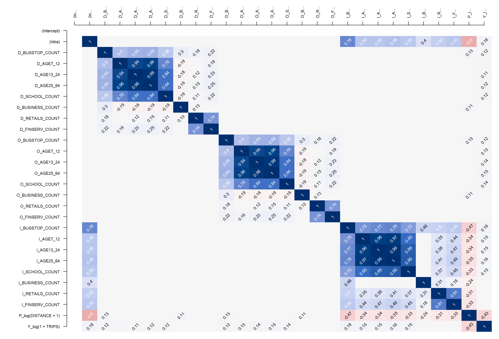

In-class Exercise 5: Spatial Econometric Interaction Models
The main new package used today will be spflow. It is recently developed as a software tool in 2021.
Data Preparation
We need three datasets, namely:
a spatial weights,
a tibble data frame consists of the origins, dest, flows and distances between the origins and destination, and
a tibble dataframe that consists of the explanatory variables.
Key differences in data preparation:
In spatial economics model, we do not need to remove the intra-zonal trips because the model can account for it.
Do not need to explicitly label an attribute as an origin or destination variable when using the
spflowpackage.
Load our rds data into R:
mpsz_flow: i-j pairs, distance and trips (used to create spflow_network_pair)
mpsz_nb: neighbours weights (used to create spflow_network-class)
mpsz_var: attributes (used to create spflow_network-class)
Creating spflow_network-class objects.
It is a S4 class that contains all information on a spatial network which is composed by a set of nodes that are linked by some neighbourhood relation. We need neighbour list and attributes.
*Note that we should not use ‘fixed distance’ nb method here as there was a subzone without a neighbour during data preparation just now.
New to this package, explore the structure of our new object class.
Formal class 'spflow_network' [package "spflow"] with 3 slots
..@ id_net : chr "sg"
..@ node_neighborhood:Formal class 'dgCMatrix' [package "Matrix"] with 6 slots
.. .. ..@ i : int [1:1902] 1 2 65 68 0 2 31 36 37 68 ...
.. .. ..@ p : int [1:314] 0 4 11 18 22 24 32 37 41 48 ...
.. .. ..@ Dim : int [1:2] 313 313
.. .. ..@ Dimnames:List of 2
.. .. .. ..$ : chr [1:313] "1" "2" "3" "4" ...
.. .. .. ..$ : NULL
.. .. ..@ x : num [1:1902] 0.143 0.143 0.2 0.125 0.25 ...
.. .. ..@ factors : list()
.. .. ..$ spectral_character: Named cplx [1:3] 1+0i 1+0i -0.535+0i
.. .. .. ..- attr(*, "names")= chr [1:3] "LM" "LR" "SR"
..@ node_data :'data.frame': 313 obs. of 15 variables:
.. ..$ SZ_NAME : chr [1:313] "INSTITUTION HILL" "ROBERTSON QUAY" "FORT CANNING" "MARINA EAST (MP)" ...
.. ..$ SZ_CODE : Factor w/ 313 levels "RVSZ05","SRSZ01",..: 1 2 3 4 5 6 7 8 9 10 ...
.. ..$ BUSSTOP_COUNT : int [1:313] 2 10 6 2 1 10 5 4 21 11 ...
.. ..$ AGE7_12 : num [1:313] 330 320 0 0 200 0 0 0 350 470 ...
.. ..$ AGE13_24 : num [1:313] 360 350 10 0 260 0 0 0 460 1160 ...
.. ..$ AGE25_64 : num [1:313] 2260 2200 30 0 1440 0 0 0 2600 6260 ...
.. ..$ SCHOOL_COUNT : int [1:313] 1 0 0 0 0 0 0 0 0 2 ...
.. ..$ BUSINESS_COUNT: int [1:313] 6 4 7 0 1 11 15 1 10 1 ...
.. ..$ RETAILS_COUNT : int [1:313] 26 207 17 0 84 14 52 0 460 34 ...
.. ..$ FINSERV_COUNT : int [1:313] 3 18 0 0 29 4 6 0 34 4 ...
.. ..$ ENTERTN_COUNT : int [1:313] 0 6 3 0 2 0 0 0 1 0 ...
.. ..$ FB_COUNT : int [1:313] 4 38 4 0 38 15 5 0 20 0 ...
.. ..$ LR_COUNT : int [1:313] 3 11 7 0 20 0 0 0 19 2 ...
.. ..$ COORD_X : num [1:313] 104 104 104 104 104 ...
.. ..$ COORD_Y : num [1:313] 1.29 1.29 1.29 1.29 1.25 ...
.. ..- attr(*, "coord_columns")= chr [1:2] "COORD_X" "COORD_Y"
.. ..- attr(*, "node_key_column")= chr "SZ_CODE"Create spflow_network_pair() data
It will contain origin and destination subzones, distance and trips (flow).
Combine first two objects together to get spflow_network_multi().
Careful: Do not reverse the order of mpsz_net and mpsz_net_pairs. Follow the syntax carefully.
Correlation Anaylsis
Check for Multi-collinearity to avoid including explanatory var that are highly correlated, using spflow package:
pair_cor()to create a correlation matrix, andcor_image()to plot the correlation matrix as a correlogram.
# run all to test
cor_formula <- log(1+ TRIPS) ~ # 1 is to avoid log 0
BUSSTOP_COUNT +
AGE7_12+
AGE13_24 +
AGE25_64 +
SCHOOL_COUNT +
BUSINESS_COUNT +
RETAILS_COUNT +
FINSERV_COUNT +
P_(log(DISTANCE + 1)) # impedence/ resistance/ cost
cor_mat <- pair_cor(
mpsz_multi_net,
#id_net_pair = id(object)[["pairs"]][[1]],
spflow_formula = cor_formula,
add_lags_x = FALSE,
#add_lags_y = FALSE
)
colnames(cor_mat) <- paste0(
substr(
colnames(cor_mat),1,3), '...')
cor_image(cor_mat)
Observed that most of the age groups are highly correlated, two choices:
aggregate all the age groups
exclude some age group
Model Calibration
Three spflow() models available, check documentation.
maximum likelihood (MLE) <- this is the default.
Tailspin two stafe least sqaure (S2SLS)
Bayes Markov chain monte carlo (MCMC)
O_(X1) + D_(X2) + I_(X3) + P_(X4)
I refers to intra-zonal -flow, P is impedence
This model goes beyong spatial interaction model by telling us whether one’s neighbours’ variable values are statistically significant and their coefficients.
base_model <- spflow(
spflow_formula = log(1 + TRIPS) ~
O_(BUSSTOP_COUNT+
AGE25_64) +
D_(SCHOOL_COUNT +
BUSINESS_COUNT +
RETAILS_COUNT +
FINSERV_COUNT) +
P_(log(DISTANCE + 1)),
spflow_networks = mpsz_multi_net)
base_model--------------------------------------------------
Spatial interaction model estimated by: MLE
Spatial correlation structure: SDM (model_9)
Dependent variable: log(1 + TRIPS)
--------------------------------------------------
Coefficients:
est sd t.stat p.val
rho_d 0.680 0.004 192.552 0.000
rho_o 0.678 0.004 187.728 0.000
rho_w -0.396 0.006 -65.586 0.000
(Intercept) 0.410 0.065 6.265 0.000
(Intra) 1.313 0.081 16.263 0.000
D_SCHOOL_COUNT 0.017 0.002 7.885 0.000
D_SCHOOL_COUNT.lag1 0.002 0.004 0.551 0.582
D_BUSINESS_COUNT 0.000 0.000 3.015 0.003
D_BUSINESS_COUNT.lag1 0.000 0.000 -0.249 0.803
D_RETAILS_COUNT 0.000 0.000 -0.306 0.759
D_RETAILS_COUNT.lag1 0.000 0.000 0.152 0.879
D_FINSERV_COUNT 0.002 0.000 6.787 0.000
D_FINSERV_COUNT.lag1 -0.002 0.001 -3.767 0.000
O_BUSSTOP_COUNT 0.002 0.000 6.806 0.000
O_BUSSTOP_COUNT.lag1 -0.001 0.000 -2.364 0.018
O_AGE25_64 0.000 0.000 7.336 0.000
O_AGE25_64.lag1 0.000 0.000 -2.797 0.005
P_log(DISTANCE + 1) -0.050 0.007 -6.792 0.000
--------------------------------------------------
R2_corr: 0.6942932
Observations: 97969
Model coherence: Validated‘rho_d’: destination constrain
‘rho_w’: intra_zonal constrain
‘D_SCHOOL_COUNT’ : the coefficient of school count at that subzone (statisically significant)
‘D_SCHOOL_COUNT.lag1’ : coefficient of neighbouring schools (NOT significant)
Retail count is not a good explanatory variable as well. Financial service count is a good explanatory variable.
Moran scatterplot (wrapper of spdep) of residuals
If points are closer to zero line, less chance of autocorrelation.

Next, pair_cor() can be used to inspect the relationship of the residual and the explanatory variables by using the code chunk below.

Working with model control
spflow_formula<- log(1 + TRIPS) ~
O_(BUSSTOP_COUNT+
AGE25_64) +
D_(SCHOOL_COUNT +
BUSINESS_COUNT +
RETAILS_COUNT +
FINSERV_COUNT) +
P_(log(DISTANCE + 1))
model_control <- spflow_control(
estimation_method = "mle",
model = 'model_1') # there are many models to choose from, check lecture notes.
#model_8 will take special care of intra-zonal trips! our model has larger intra-zonal trips
mle_model1 <- spflow(
spflow_formula,
spflow_networks = mpsz_multi_net,
estimation_control = model_control)
mle_model1--------------------------------------------------
Spatial interaction model estimated by: OLS
Spatial correlation structure: SLX (model_1)
Dependent variable: log(1 + TRIPS)
--------------------------------------------------
Coefficients:
est sd t.stat p.val
(Intercept) 11.384 0.069 164.255 0.000
(Intra) -6.006 0.112 -53.393 0.000
D_SCHOOL_COUNT 0.093 0.003 28.599 0.000
D_SCHOOL_COUNT.lag1 0.255 0.006 44.905 0.000
D_BUSINESS_COUNT 0.001 0.000 10.036 0.000
D_BUSINESS_COUNT.lag1 0.003 0.000 18.274 0.000
D_RETAILS_COUNT 0.000 0.000 -1.940 0.052
D_RETAILS_COUNT.lag1 0.000 0.000 -2.581 0.010
D_FINSERV_COUNT 0.005 0.000 10.979 0.000
D_FINSERV_COUNT.lag1 -0.016 0.001 -17.134 0.000
O_BUSSTOP_COUNT 0.014 0.001 25.865 0.000
O_BUSSTOP_COUNT.lag1 0.015 0.001 21.728 0.000
O_AGE25_64 0.000 0.000 14.479 0.000
O_AGE25_64.lag1 0.000 0.000 14.452 0.000
P_log(DISTANCE + 1) -1.281 0.008 -165.327 0.000
--------------------------------------------------
R2_corr: 0.2831458
Observations: 97969
Model coherence: Validated